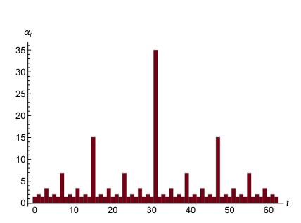

An Algebraic View of Convex Optimization
Kevin Shu
California Institute of Technology

Ben Grimmer - Johns Hopkins University

Alex L. Wang - Purdue University
Introduction and History
Definition
We say that $f:\R^d \rightarrow \R$ is convex if whenever $x, y \in \R^d$ and $t \in [0,1]$, \[f(t x + (1-t) y) \le t f(x) + (1-t)f(y).\]
We say that $f$ is $L$-smooth if it is differentiable everywhere and its gradient is $L$-Lipschitz, i.e. \[\|\nabla f(x) - \nabla f(y)\| \le L \|x-y\|.\]
Given an oracle for evaluating and differentiating an $L$-smooth convex $f$, we want to find an approximate minimum of $f$.
Introduction and History
Basic idea: any first order method can only see the function and its gradients at a finite number of points.

Introduction and History
Basic idea: any first order method can only see the function and its gradients at a finite number of points.

Introduction and History
Basic idea: any first order method can only see the function and its gradients at a finite number of points.
Definition
Given a set of triples $\mathcal{T} = \{(x_i, f_i, g_i)\}_{i=0}^n \subseteq \R^d \times \R \times \R^d$, we say that $\mathcal{T}$ is interpolable if there exists an $L$-smooth convex function $f$ so that $f(x_i) = f_i$ and $\nabla f(x_i) = g_i$ for each $i$.
Introduction and History
Theorem (Taylor, Hendrickx, Glineur 2016)
$\mathcal{T}$ is interpolable if and only if for each $i, j \in \{0, \dots, n\}$, \[ Q_{ij} = f_i - f_j - \langle g_j, x_i - x_j \rangle - \frac{1}{2L}\|g_i-g_j\|^2 \]
It turns out that this implies that the problem of determining the convergence rate for a fixed number of steps of many algorithms reduces to an SDP.
Introduction and History
An iterative algorithm defines a sequence of query points $x_0, x_1, \dots, x_N$, where $x_i$ depends on the values of the function and its gradients at $x_0, \dots, x_{i-1}$.
Want a bound \[ f(x_N) - f(x_*) \le \frac{L}{2\tau} \|x_0-x_*\|^2, \] where $x_*$ is a minimizer and $\tau$ is as large as possible.
Performance Estimation (Sums of Squares)
Want to show that for any $L$-smooth convex function $f$ with minimizer $x_*$, \[ P = \frac{L}{2\tau} \|x_0-x_*\|^2 - (f(x_N) - f(x_*)) \ge 0. \]
This is a polynomial we want to be nonnegative on a semialgebraic set: apply sums of squares techniques.
Find a certificate of the form \[ P = \sum_{i,j} \lambda_{ij}Q_{ij} + S, \] where $\lambda_{ij} \ge 0$, and $S$ is something positive semidefinite.
This is equivalent to the performance estimation problem methodology popularized by Drori and Teboulle in 2012.
Performance Estimation
First try: For each $i,j \in [n] \cup \{*\}$, find $\lambda_{ij} \ge 0$ so that \[ \frac{L}{2} \|x_0-x_*\|^2 - \tau(f(x_N) - f(x_*)) = \sum_{i, j \in [n] \cup \{*\}} \lambda_{ij} Q_{ij} \ge 0. \] Rearranging would imply the bound we want for the final suboptimality.
Issue: this is impossible; \[ Q_{ij} = f_i - f_j - \langle g_j, x_i - x_j \rangle - \frac{1}{2L}\|g_i-g_j\|^2 \] does not involve any terms of the form $\|x_*\|^2$.
Performance Estimation
Modified Proof idea: For each $i,j \in [n] \cup \{*\}$, find $\lambda_{ij} \ge 0$ so that \[ \frac{L}{2} (\|x_0-x_*\|^2\color{red}{ - \|z_N - x_*\|^2}) - \tau(f(x_N) - f(x_*)) = \sum_{i, j \in [n] \cup \{*\}} \lambda_{ij} Q_{ij}, \] where $z_N \in \R^d$ is arbitrary.
This introduces a "slack" term $\color{red}{\|z_N - x_*\|^2}$, and this turns out to the minimal slack needed for such a proof to work.
This $z_N$ appears in many algorithms as a `momentum' variable.
Performance Estimation
Example (gradient descent): Take $N = 1$ and $x_1 = x_0 - \frac{1}{L}\nabla f(x_0)$. Set $g_0 = \nabla f(x_0)$ and $g_1 = \nabla f(x_1)$.
\[ Q_{*0} = f_* - f_0 - \langle g_0, x_* - x_0\rangle - \frac{1}{2L} \|g_0\|^2 \ge 0 \] \[ Q_{*1} = f_* - f_1 - \langle g_1, x_* - x_1\rangle - \frac{1}{2L} \|g_1\|^2 \ge 0 \] \[ Q_{01} = f_0 - f_1 - \langle g_1, x_0 - x_1\rangle - \frac{1}{2L} \|g_0 - g_1\|^2 \ge 0 \]
Performance Estimation
Example (gradient descent): Take $N = 1$ and $x_1 = x_0 - \frac{1}{L}g_0$, where $g_0 = \nabla f(x_0)$ and $g_1 = \nabla f(x_1)$.
\[ Q_{*0} = f_* - f_0 - \langle g_0, x_* - x_0\rangle - \frac{1}{2L} \|g_0\|^2 \ge 0 \] \[ Q_{*1} = f_* - f_1 - \langle g_1, x_* - \color{red}{(x_0-\frac{1}{L}g_0)}\rangle - \frac{1}{2L} \|g_1\|^2 \ge 0 \] \[ Q_{01} = f_0 - f_1 - \langle g_1, x_0 - \color{red}{(x_0-\frac{1}{L}g_0)}\rangle - \frac{1}{2L} \|g_0 - g_1\|^2 \ge 0 \]
Performance Estimation
Taking $\tau = 1$ and $z_1 = x_0 - \frac{1}{L}(g_0 + g_1)$ yields \[ \frac{1}{2}(Q_{*0} + Q_{*1} + Q_{01}) = f_* - f_1 + \frac{L}{2}(\|x_0 - x_*\|^2 - \|z_1 - x_*\|^2) \]
Momentum: a first taste
Suppose that we have taken $n-1$ steps in some algorithm, and can certify that \[ H_{n-1} = \tau_{n-1}(f_* - f_{n-1}) + \frac{L}{2}(\|x_0 - x_*\|^2 - \|z_{n-1} - x_*\|^2) \ge 0 \]
Can we use this inequality inductively to get an inequality of the form \[ H_n = \tau_n(f_* - f_{n}) + \frac{L}{2}(\|x_0 - x_*\|^2 - \|z_{n} - x_*\|^2)? \]
Specifically, can we choose $x_n$, $z_n$, and $\tau_n$ so that $H_n$ is a weighted sum of $H_{n-1}$ and the $Q_{ij}$'s?
Momentum: a first taste
A key simplification:
Not all of the $Q_{ij}'s$ are useful.
At iteration $n-1$, all of the quantities $f_0, \dots, f_{n-1}$ and $g_0, \dots, g_{n-1}$ are known and fixed. Thus, we can treat these things as constants. In particular, this implies that $Q_{ij}$ for $i, j \le n-1$ are also constants.
Also, the inequalities \[ Q_{i*} = f_i - f_* - \frac{1}{2L}\|g_i\|^2 \ge 0 \] \[ Q_{ni} = f_n - f_i \dots \ge 0 \] `go the wrong way: they are either upper bounds on $f_*$ or lower bounds on $f_n$.
Momentum: a first taste
In fact, in this setting, we can restrict our attention to just 3 inequalities: \[ Q_{n-1, n}, Q_{* n}, Q_{*n-1} \ge 0.\]
No matter what $f_n, g_n, f_*, x_*$ are, we want \[ H_n = \mu H_{n-1} + \lambda_{n-1 n}Q_{* n} + \lambda_{* n}Q_{* n} + \lambda_{* n-1}Q_{* n-1}. \]
Momentum: a first taste
No matter what $f_n, g_n, f_*, x_*$ are, we want \[ H_n = \mu H_{n-1} + \lambda_{n-1 n}Q_{* n} + \lambda_{* n}Q_{* n} + \lambda_{* n-1}Q_{* n-1}. \]
Each term in this expression should be thought of as a polynomial in the unknown expressions $f_n, g_n, f_*, x_*$ (where the coefficient of $\|x_*\|^2$ is 0): \[ C + a f_n + b f_* + \langle v, g_n\rangle + \langle w, x_*\rangle + c \|g_n\|^2 + d \langle g_n, x_*\rangle. \]
Momentum: a first taste
Each term in this expression should be thought of as a polynomial in the unknown expressions $f_n, g_n, f_*, x_*$: \[ \color{blue}C + \color{blue}a f_n + \color{blue}b f_* + \langle \color{red}v, g_n\rangle + \langle \color{red}w, x_*\rangle + \color{blue}c \|g_n\|^2 + \color{blue}d \langle g_n, x_*\rangle. \]
There are 5 scalar coefficients and 2 vector coefficients in this expression, so the equation \[ H_n = \mu H_{n-1} + \lambda_{n-1 n}Q_{* n} + \lambda_{* n}Q_{* n} + \lambda_{* n-1}Q_{* n-1}. \] amounts to 5 scalar equations and 2 vector equations.
Momentum: a first taste
There are 6 scalar coefficients and 2 vector coefficients in this expression, so the equation \[ H_n = \mu H_{n-1} + \lambda_{n-1 n}Q_{* n} + \lambda_{* n}Q_{* n} + \lambda_{* n-1}Q_{* n-1}. \] amounts to 5 scalar equations and 2 vector equations.
We are allowed to make choices for $\tau$, $\mu$, $\lambda_{n-1 n}$, $\lambda_{* n}$, $\lambda_{* n-1}$ and $x_n$, $z'$, so the number of equations is equal to the number of degrees of freedom. We would expect a finite number of solutions that allows for this equation to hold.
Momentum: a first taste

Momentum: a first taste
\[\tau_n = \frac{1 + \sqrt{1 + 4(1-\delta) + 4 \tau_{n-1} + 4 \sqrt{(1-\delta)^2 + \theta_{n-1}^2}}}{2}\] \[x_{n} = z_{n-1} + \alpha (x_{n-1} - z_{n-1}) - \beta g_{n-1}\] \[z_{n} = z_{n-1} - \sqrt{\tau_n}(\beta-\alpha)g_{n-1}-\sqrt{\tau_n} g_n,\] where $\delta, \alpha, \beta$ are some expressions in terms of $\tau_n$.
This turns out to be a variant of the Nesterov fast gradient method, which was the first method to achieve a convergence rate of $\tau_n = \Omega(n^2)$ (this is the best possible up to constant factors).
Can we do better?
Momentum: Optimized
Modify the inductive hypothesis a little \[ H_{n-1} = \tau_{n-1}(f_* - f_{n-1} \color{red}{+ \frac{1}{2}\|g_{n-1}\|^2}) + \frac{L}{2}(\|x_0 - x_*\|^2 - \|z_{n-1} - x_*\|^2) \ge 0 \]
Applying the same methodology as above leads to the optimized gradient method (OGM) found by Kim and Fessler in 2016.
Momentum: Optimized
OGM is optimal in the following (minimax sense):
Theorem (Drori 2017)
There exists a function $f_{hard} :\R^{N+2} \rightarrow \R$ and $x_0 \in \R^{N+2}$ so that any iterative algorithm with the property that \[ x_{i+1} \in x_0 + \text{span}(\nabla f_{hard}(x_0), \dots, \nabla f_{hard}(x_i)), \] \[ f(x_N) - f_* \ge \frac{L}{2\tau_N} \|x_0 -x_*\|^2, \] where $\tau_N$ is defined by the OGM recurrence.
Momentum: Beyond Worst Case
OGM converges at the same rate for these functions:

The Drori hard function

$f(x) = \frac{1}{2}x^2$
After 2 gradient queries, the minimizer of $f(x) = \frac{1}{2}x^2$ is uniquely determined.
Momentum: Beyond Worst Case
The issue is that OGM only considers the current gradient when making its update; earlier gradient queries can be useful when the function is nonadversarially chosen.
What if we tried a more complicated induction of the form \[ H_n = \sum_{i=0}^{n-1}\mu_i H_{i} + \sum_{i=0}^{n}\lambda_{* n}Q_{* n} + \sum_{i=0}^{n-1}\lambda_{i n}Q_{i n}? \]
This leads to an algorithm we call the subgame perfect gradient method.
Momentum: Subgame Perfect Gradient Method
We found a first order method with the following dynamic guarantee:
Theorem (Grimmer, S, Wang)
The algorithm (SPGM) provides the following guarantee: if $\mathcal{H} = \{(x_i, f_i, g_i)\}_{i=0}^n$ were the first order information produced by $n$ iterations of SPGM, then there exists some $\hat{\tau}_N$ (depending on $\mathcal{H}$) so that for any function $f$ so that $f(x_i) = f_i$ and $\nabla f(x_i) = g_i$, \[ f(x_N) - f(x_*) \le \frac{L}{2\hat{\tau}_N} \|x_0-x_*\|^2. \]
Momentum: Subgame Perfect Gradient Method
We found a first order method with the following dynamic guarantee:
Theorem (Cont)
On the other hand, there exists a function $f_{\mathcal{H}}$ agreeing with the history $\mathcal{H}$ and so that any sequence $x_{n+1}, \dots, x_{N}$ satisfying \[ x_i \in x_0 + \text{span} \{\nabla f(x_0), \dots, \nabla f(x_{i-1})\}, \] \[ f_{\mathcal{H}}(x_N) - f_{\mathcal{H}}(x_*) \ge \frac{L}{2\hat{\tau}_N} \|x_0-x_*\|^2. \]
Acceleration with Gradient Descent
Can we get acceleration with methods of the form \[ x_{i+1} = x_i - h_i \nabla f(x_i)? \]
Acceleration with Gradient Descent
History
- Vanilla gradient descent ($x_{i+1} = x_i - \frac{1}{L}\nabla f(x_i)$): converges at a rate of $\frac{1}{2n}$
- Vanilla gradient descent: analysis improved to $\frac{1}{4n}$ in Drori and Teboulle 2012, also showing that any constant step size between $0$ and $2$ yield similar convergence.
- Existence of step size choices leading to convergence at a rate of $O(\frac{1}{n^{1+\epsilon}})$ was shown simultaneously by (Altschuler and Parrilo) and (Grimmer, S, Wang) in 2023.
Acceleration with Gradient Descent
History
\[ h_i = 1+\rho^{\nu(i) - 1}, \] where $\rho = 1+\sqrt{2}$ and $\nu(i)$ is the largest power of 2 dividing $i$.
This leads to a convergence rate of $O(\frac{1}{n^{\log_2(\rho)}}$.
Acceleration with Gradient Descent
In fact, the silver step sizes are one of a large family of step size patterns that are obtainable via a recursive procedure, which were discovered simultaneously in (Grimmer, S, Wang 2024) and (Jiang, Zhang 2024).
Loosely, we find that there are `composable' step size sequences, so that if $\alpha$ and $\beta$ are composable step size sequences, then there exists a $\mu \in \R$ so that the composition \[ \alpha \join \beta = [\alpha, \mu, \beta] \] is composable with an improved rate of convergence.
Here, $\mu$ solves some degree $2$ polynomial equation in order to make the composition $\alpha \join \beta$ have the same performance on the quadratic function $f(x) = \frac{1}{2}x^2$ and the Huber function $f(x) = \begin{cases}|x|+\frac{1}{2} \text{ if x > \frac{1}{2}}\\x^2$.
Acceleration with Gradient Descent
Theorem
There are composable sequences with rate $r \le \frac{0.42311}{(n+1)^{1.27\dots}},$ where $1.27\dots = \log_2(1+\sqrt{2})$.
- Best known constant factor for gradient descent methods.
- We find sequences that match or exceed the performance of the step size sequences found by branch-and-bound search in Das Gupta et al. for each $n$ that they considered.
- These sequences can be obtained by repeated composing the empty sequence with itself.
Questions for Algebraists
- Why do these problems have such nice solutions (solvable by radicals, large degeneracy, Grobner bases generated by quadrics, etc)?
- Why are worst case functions often 1 dimensional (why do the dual SDPs to these performance estimation problems have rank 1 solutions)?
- Can we show lower bounds that there are no solutions to these problems with rates beating the $O(\frac{1}{n^{\log_2(\rho)}})$ convergence rates?